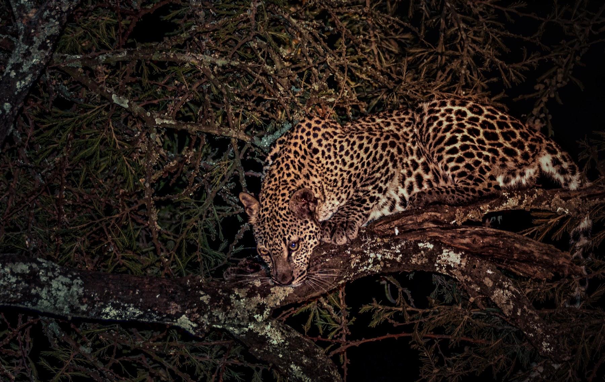
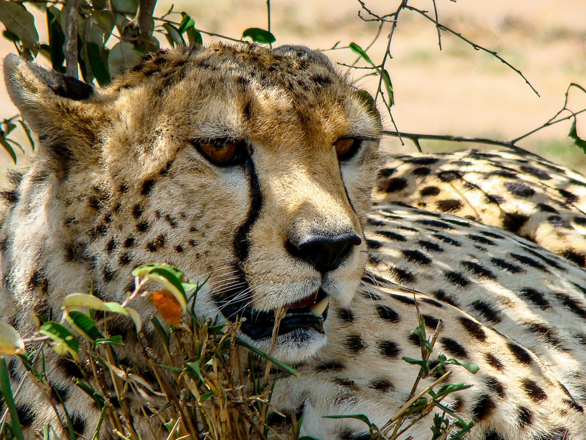
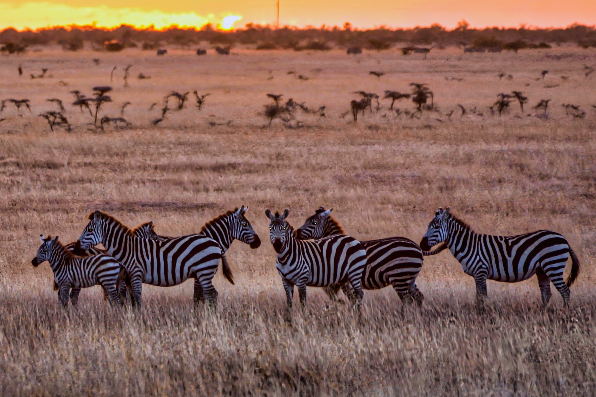

Stories
Hope Through The Lens
Every story here follows the same path: from a moment of wonder, through personal connection and the knowledge you need, to concrete action — and back to hope. That's how images and stories emerge that don't just inform, but move people.
A lion's gaze
Wonder

A lion looks straight into the camera. No zoo, no fence in frame — just this one moment where two gazes meet and time seems to pause. That's the beginning of every good story: the moment that makes you stop.
Connection
This lion lives in a landscape increasingly shared with people — grazing land, settlements, and roads pressing closer to the last large habitats. His survival depends not only on himself, but on the people, rangers, and organizations who mediate daily between the needs of people and wildlife.
Knowledge

Big cats like lions and leopards need large, connected territories to find enough prey and reproduce. When roads and fences cut these territories into ever-smaller islands, genetic diversity drops and conflict with people and livestock rises — a pattern seen worldwide in shrinking wildlife populations.
Action
Effective protection starts with good data: exactly where do animals move, where does conflict arise, which corridors still connect habitats? That's exactly where my work comes in — evidence-based analysis that translates into concrete, prioritized action for organizations on the ground, instead of yet another study nobody implements.
Hope
There's no simple fix — but there are dedicated people, organizations, and now better tools that together make a real difference. Every preserved corridor, every defused conflict is a step that counts.
Desert and change
Wonder

A desert gecko, barely bigger than a finger, with eyes like tiny works of art — in a landscape that at first glance looks empty. Look closely, though, and this desert is full of life.
Connection

The same habitat that shelters this tiny gecko is also home to the critically endangered black rhino. Two completely different animals, one shared fate: their survival depends on the same intact, unfragmented landscapes.
Knowledge
Drylands are often seen as less worth protecting because they look less spectacular than rainforest or savanna — yet they hold highly specialized, often endemic species found nowhere else. Poaching, water scarcity, and reduced rainfall due to climate change put additional pressure on these habitats.
Action

Organizations on the ground need one thing above all: reliable support to fund anti-poaching units, monitoring, and community education long-term, rather than moving from project to project. That's exactly what I help with — strategy built for continuity rather than one-off campaigns.
Hope
This world is extraordinary, down to the smallest detail — from the gecko to the rhino. It's worth protecting. And every organization, every person who stands up for it, increases the chance that it stays that way.